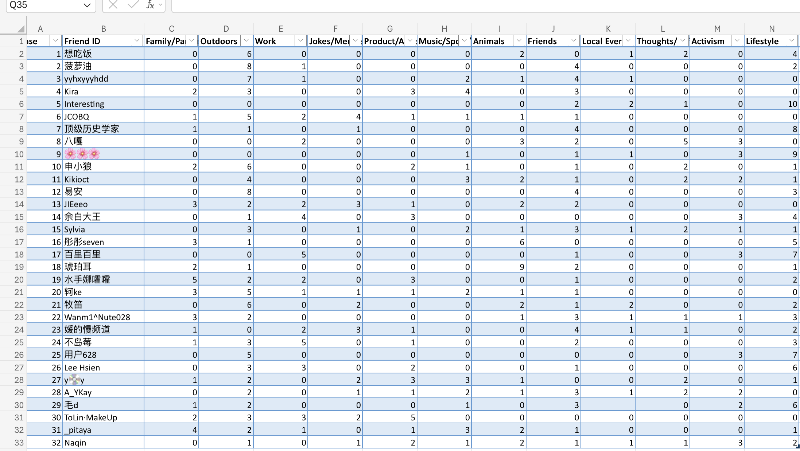

Week 6 · Identity and Data
Turning posts into numbers
This week, we looked at how our online activity can be used to build a picture of who we are. For the homework, I listed 32 accounts and looked through their recent posts. The task was to count each person's latest 15 posts using Sumpter's 13 categories, giving each post one point in just one category.
I recorded the counts in Excel, with one row for each person. Some accounts had more outdoor posts, while others shared more about animals, friends or everyday life. My next step is to check that each row adds up to 15 and make a scatter plot comparing Outdoors and Lifestyle.

My reflection
I thought this would mainly be a counting exercise, but choosing the categories took more thought than I expected. A video of someone going out with friends could fit under both Outdoors and Friends. I had to choose which part of the post mattered most. Someone else looking at the same video might make a different choice, so the numbers in the spreadsheet also reflect my judgement.
Once the posts were reduced to counts, it was easy to start describing people through their biggest category. If someone had lots of outdoor videos, I might think of them as an outdoorsy person. But perhaps they'd just been on holiday. Fifteen recent posts give me a glimpse of what they chose to share at that moment. I'd need to know much more about them before treating that as a picture of their interests or personality.
This helped me understand the idea of algorithmic identity. In this exercise, I could see every choice I made when turning a post into a category. On a platform, I can see some of the recommendations that follow my activity, but I have much less access to how it reaches those decisions. It made me wonder how often a brief interest or a single interaction becomes part of the profile a platform builds around me.